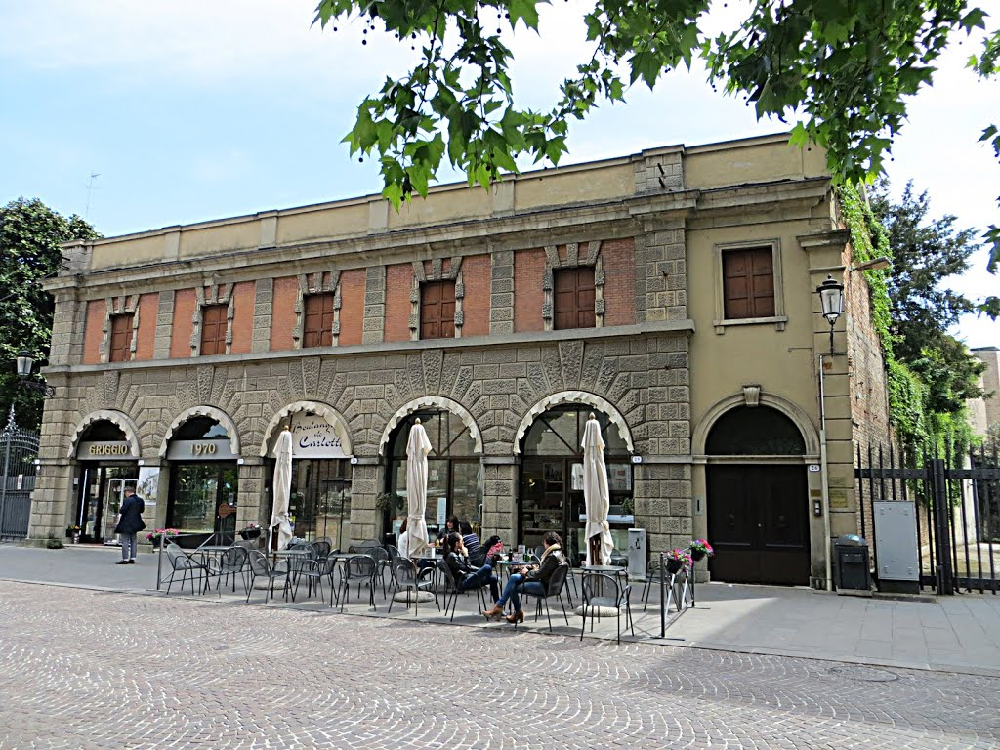
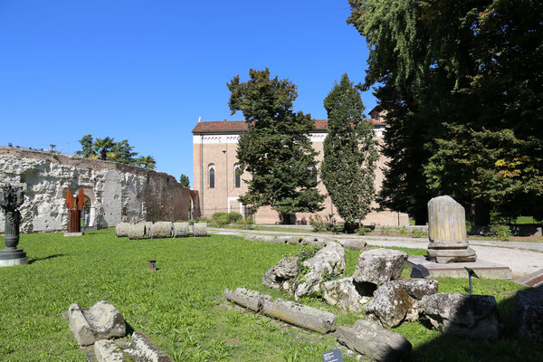

La nostra storia
Il ristorante Sushi Nakamura nasce nel 1995 dalla volontà degli chef di fama internazionale Carlo Pravettoni e Kira Yoshikage di portare la cucina tradizionale del Paese del sol levante all'interno della città di Giotto.
In questo angolo nipponico dedicato al sushi fusion potrete assaporare sia i grandi classici della cucina giapponese che le loro rivisitazioni moderne concepite dai nostri chef, il tutto in un contesto elegante dal retrogusto orientale.
La freschezza delle materie prime, i sapori inediti e la cordialità dello staff contribuiranno a proporvi un'esperienza unica ed inimitabile adatta a tutti i palati.
Il ristorante Sushi Nakamura si situa nel centro storico della città di Padova, a tre minuti a piedi dalla Cappella degli Scrovegni, offrendo la possibiltà ai suoi clienti di fare una passeggiata nella storia padovana dopo aver degustato la prelibata cucina orientale. 